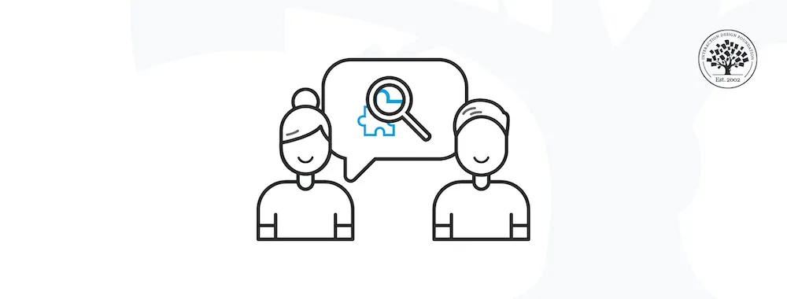
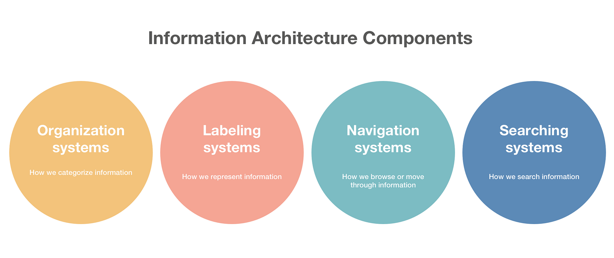
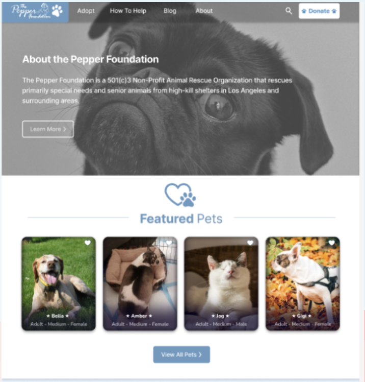
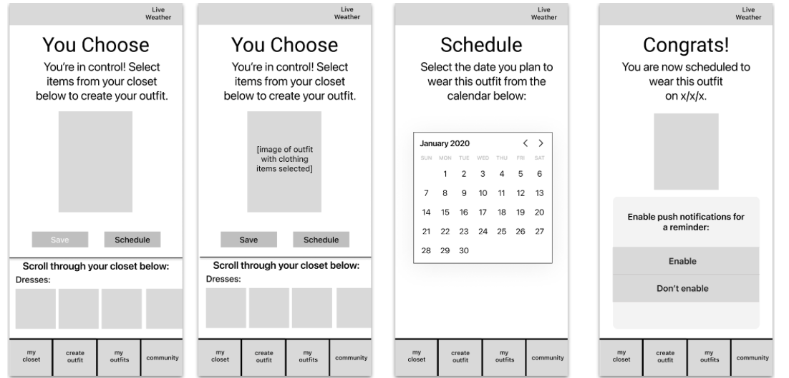

Hello, I am Leighton Heegaard, a freelance UX/UI designer. I am passionate about crafting intuitive digital experiences. I thrive on collaboration and constantly seek inspiration from diverse sources to push the boundaries of design. Let's connect and create something remarkable together!
My Ux Skills

Wireframing
Proficient in wireframing tools like Figma, I possess a strong grasp of user-centered design principles. With experience in crafting wireframes for both web and mobile applications, I excel at translating user requirements into intuitive design solutions. Skilled in wireframe prototyping and iterative design processes, I contribute to projects by creating structured blueprints that guide the development of user-friendly interfaces. My portfolio showcases examples of my wireframing work, demonstrating my ability to enhance user experiences through thoughtful design solutions.

User Research
Proficient in conducting user research methodologies, I possess a keen understanding of user behavior and preferences. Experienced in gathering and analyzing user feedback through methods such as surveys, interviews, and usability testing, I leverage insights to inform design decisions and create intuitive digital experiences. With a user-centric approach, I excel at translating research findings into actionable design recommendations that enhance user satisfaction and engagement. My ability to apply user research principles ensures that design solutions meet the needs and expectations of target audiences effectively.

Information Architecture
Skilled in information architecture, I design intuitive digital structures to enhance user navigation. Proficient in creating sitemaps and navigation systems, I prioritize user needs and content hierarchy for improved usability. My expertise ensures user-friendly digital experiences and enhanced engagement.
My work

Pepper Foundation Redesign
Worked with other designers on a comprehensive redesign focusing on improving user experience and making the website more visually appealing, in turn driving more traffic to the site

Closet Cue
Focused on user centered design principles. Conducted user interviews, analyzed feedback, identified pain points within the app. continued to iterated design until designers and stakeholders were happy and engaged.